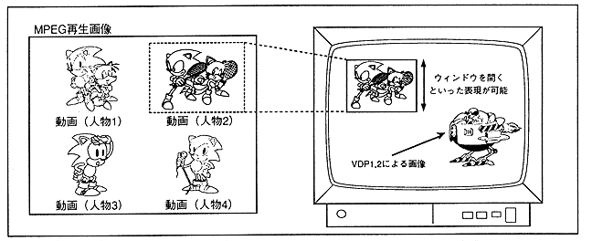

As shown in Figure 3.31, this is a function to cut out a part of the played image and display it on the TV screen in any size. By using this function, you can perform "MPEG playback image display position and display size change", "Select and display one of multiple screens", "Zoom in, zoom out", etc.
Figure 3.31 Window function
